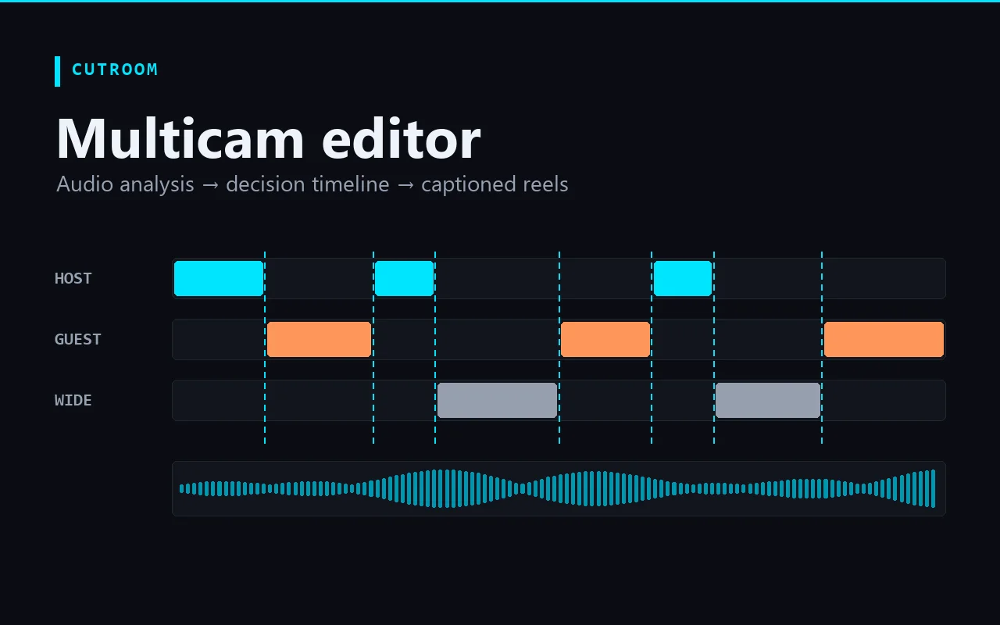

Build · Creative Technology
CUTROOM — a multicam podcast editor that runs on your machine.
A local editing cockpit that turns prepared multicam footage, separate audio tracks, and a transcript into a reviewable, editable cut-decision timeline — then renders rough-cuts and captioned vertical reels. No cloud upload, no API calls. Built from producing the High Functioning Podcast.

The problem
Multicam podcast editing is the same manual work, every episode — and it's the part that doesn't scale.
A single long-form episode means cutting between host, guest, and wide cameras by hand, syncing separate audio, finding the moments worth clipping, and then re-cutting and captioning each vertical reel from scratch. The creative decisions are worth a human; the mechanical ones — who's talking, which camera is live, where a clip starts — are not. CUTROOM is the tool that takes the mechanical layer off the editor so the judgment stays with the editor.
How it works
A local pipeline: analyze the audio, propose a cut, let a human review it, then render. Every step is editable.
-
01
Assign local media
Point CUTROOM at the host/guest/wide cameras, the separate host/guest/mix audio tracks, the transcript, and notes. Paths are stored in a local
project.json— large files are never copied or uploaded. -
02
Analyze the audio
A Python engine reads the isolated host and guest tracks and computes who is speaking when — windowed RMS with smoothing — into a structured
speaker_activity.json, visualized as a colored speaker timeline. -
03
Build the cut-decision timeline
Speaker activity becomes a first-pass
edit_decisions.json— a segment-by-segment timeline of which camera is live, with review flags. One click runs save → analyze → decide and opens it for editing. -
04
Refine with a recipe & review
An AI Recipe screen builds a real prompt from the project and validates a typed
cutroom.recipe.v2response (Zod-checked) before applying it. A Multicam Review screen scrubs each segment, reassigns cameras, flags review, and shows the transcript alongside the timeline. -
05
Render rough-cuts & captioned reels
A render queue produces a low-res rough-cut preview with FFmpeg. Reel timelines derive clip candidates from the same data, caption them with real transcript words, and batch-render vertical 1080×1920 reels — caption style (font, color, position, ALL CAPS) edited with a live preview and burned in.
Where it is now
The first vertical slice runs end to end. It's a working tool, not a finished product — and it's honest about that.
Why I'm building it
CUTROOM is the producer side and the systems side of my work in one place. It came directly out of editing the High Functioning Podcast — the same repeatable-workflow thinking behind that show, turned into a tool. It's the clearest answer to what a media producer who also builds can do for a team: keep a real human on the taste, and build the system that takes the repetitive work off their plate.